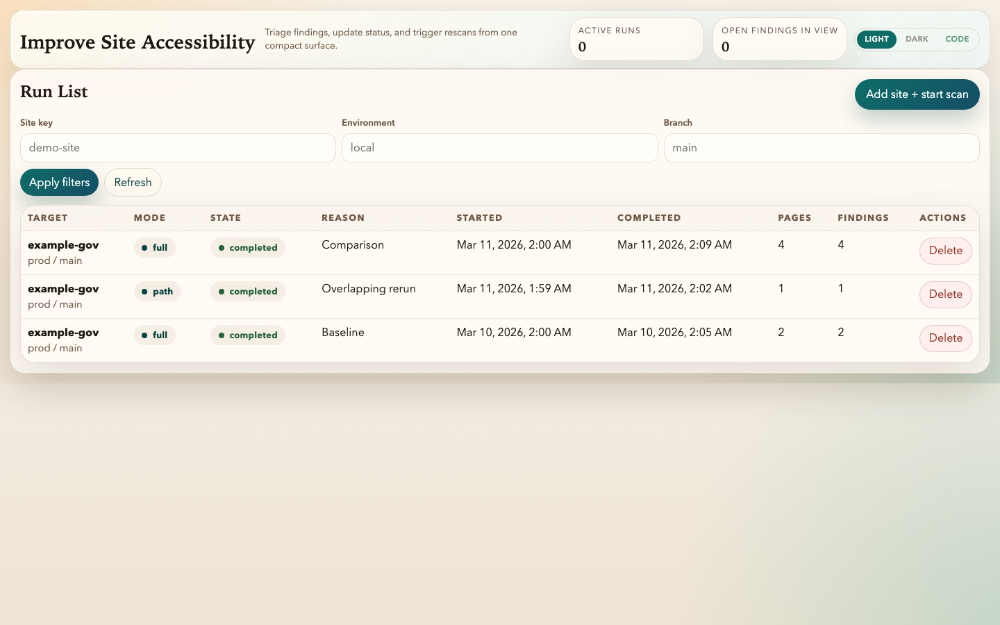
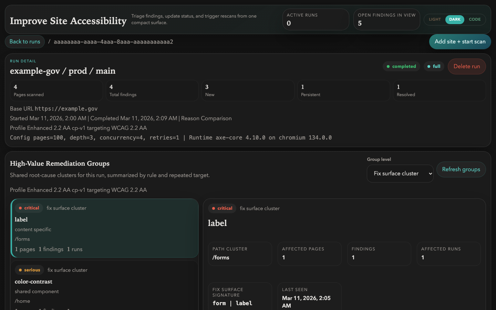
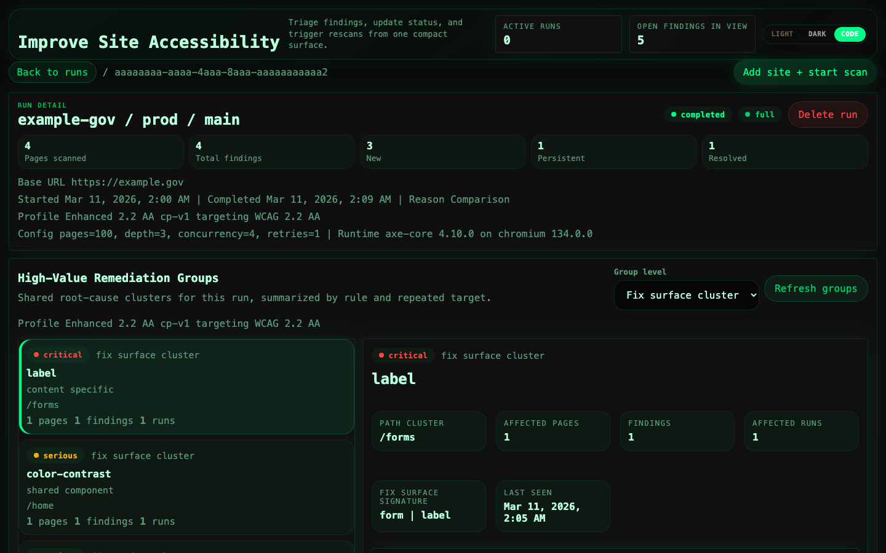

Self-hosted WCAG 2.1 compliance tracking
Free, open-source accessibility scanner and remediation tracker. Built for government teams who need accessible websites but can't afford commercial tools.



What you get
Automated WCAG scanning
Browser-based accessibility scans powered by axe-core and Playwright. Configurable compliance profiles for WCAG 2.1 Level A, AA, and AAA.
Remediation dashboard
Web UI for reviewing findings, updating statuses, and tracking progress across scan runs. Three themes: light, dark, and code.
MCP server for AI agents
Expose scanning, triage, and remediation tools to LLM-based agents via the Model Context Protocol. Works with Claude Code, OpenCode, and other MCP clients.
High-Value Target grouping
Findings grouped by rule, page, or path to prioritize the most impactful fixes. Root-cause clusters help teams fix related issues together.
Diff-aware triage
Track new, fixed, and recurring findings across successive scan runs. Know what changed without manually comparing reports.
Self-hosted and free
Runs on your own infrastructure with Docker Compose. No API keys, no vendor lock-in, no per-scan pricing. MIT licensed.